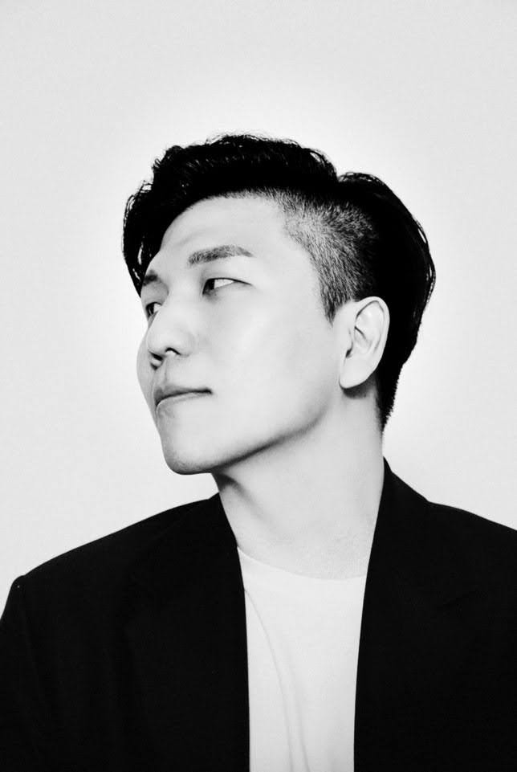

2023.02 — Present
Software Engineer
Samsung Electronics · Full-time · Suwon
파트너 Notification 시스템을 처음부터 설계·구현했습니다. Spring Boot·Kafka·FCM 기반의 카드·밸류·벌크 타겟 푸시와 프라이버시 보호 위치기반 알림 아키텍처를 개발했습니다.
HELLO.
I’m 송창호
제품과 인프라를 함께 이해하며, 복잡한 시스템을 오래 운영 가능한 구조로 만듭니다.

PROFILE / EXPERIENCE
스크롤할 때마다 제가 지나온 역할과 배운 것들이 하나씩 강조됩니다.
2023.02 — Present
Samsung Electronics · Full-time · Suwon
파트너 Notification 시스템을 처음부터 설계·구현했습니다. Spring Boot·Kafka·FCM 기반의 카드·밸류·벌크 타겟 푸시와 프라이버시 보호 위치기반 알림 아키텍처를 개발했습니다.
2018.11 — 2022.09
브레싱스 · Full-time · Seoul
헬스케어 IoT 스타트업의 소프트웨어 스택을 총괄했습니다. Flutter·BLE·AWS·Terraform 기반 제품과 인프라, 증분 데이터 싱크를 설계했습니다.
2013.03 — 2018.10
Samsung Electronics
클라우드 DB 인프라의 DR·HA·백업·이중화를 운영하고, Samsung Pay 어드민 포털과 글로벌 이벤트 시스템을 개발했습니다.
2011.06 — 2012.12
Samsung Software Membership
삼성 내부 소프트웨어 인큐베이션 프로그램에 참여해 프로젝트와 기술 스터디를 수행했습니다.
2008.09 — 2010.10
Republic of Korea Air Force · Gyeryong
공군중앙전산소에서 내부 소프트웨어 시스템을 개발·유지보수했습니다.
2006 — 2013
세종대학교
디지털컨텐츠를 전공하며 기술과 콘텐츠를 연결하는 기반을 쌓았습니다.
2003.03 — 2006.02
휘문고등학교
PLAYGROUND
지렁이 게임은 다음 개발 루프에서 추가됩니다.
LET’S CONNECT